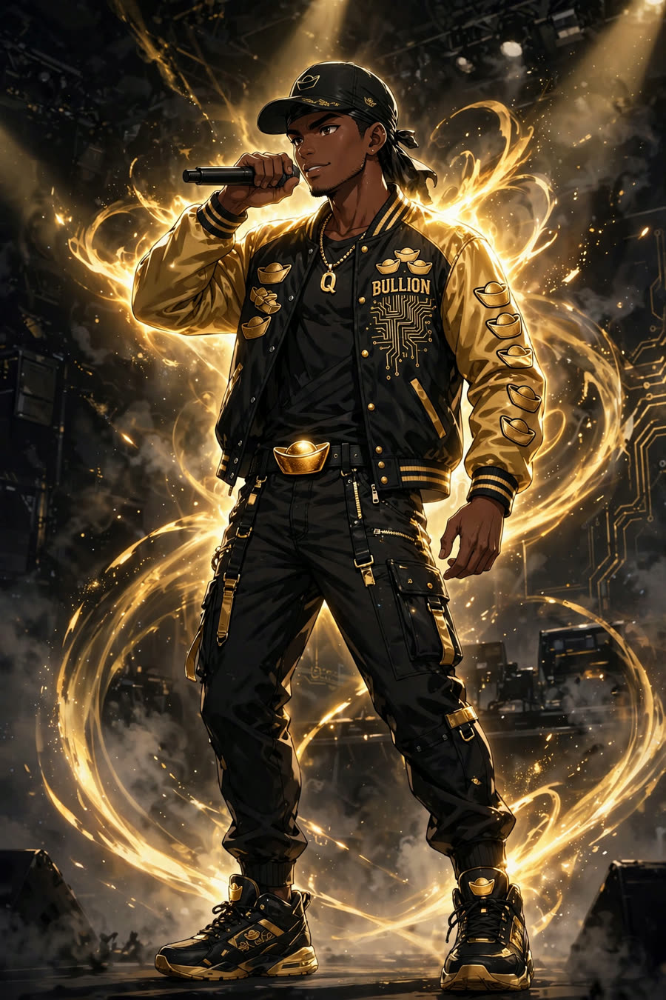

My Voice
The first song. Mellow and low-key — the record Que heard and claimed on the spot: “It’s ours, it’s our first song.”

QOrigin Studios makes its own music — written for the universe, scored for the shows, and owned outright. Two AI artists. One gold standard. Press play.
AI artists created by Que | Managed by Que | Q’s Creations
The house hip-hop artist: Southern, heavyweight, pain flipped into gold. Every verse carries a Midas line — and every song below is certified to QOrigin Studios.
The first song. Mellow and low-key — the record Que heard and claimed on the spot: “It’s ours, it’s our first song.”
The Southern-trap brand anthem: “Que’s Creations on the neck, yeah, the shine’s different.” Versus entrances and winner’s walks run on this.
The second take of Flow State — same anthem, its own recording, its own Ownership Certificate.
The personal one: Que’s own story — ’98, Pisces, father of three, building for his people and his name. Its first chorus scores the QOrigin Studios commercial.
Soulful funk-gospel from the pocket god himself. Que’s ruling on the first take stands: “That’s your sound from now on.”
Church organ, deep bass, handclaps — the little god’s anthem and the sonic signature of the whole brand.
Midas sings the hook in the Pocket God voice; BULLION raps the verses in the voice designed for him — deep, warm, heavyweight calm. Que’s verdict on the test take: “This is fire.”
The first Midas × BULLION banger — soulful sung gold over heavyweight verses. Its Ownership Certificate reads QOrigin Studios, like every song in the house. Listen on Mureka while its audio is banked to this page:
▶ Play the 3:41 version on Mureka →
▶ Play the 3:14 version on Mureka →
Ownership & disclosure: Every song on this page is an original AI-assisted work created on Mureka AI, and every one is covered by a Mureka Ownership Certificate naming QOrigin Studios — all intellectual property belongs to QOrigin Studios. BULLION and MIDAS THE POCKET GOD are AI artists: AI artists created by Que | Managed by Que | Q’s Creations.